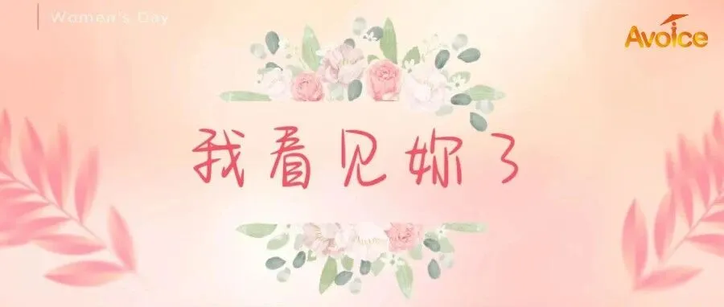
以下文章来源于茉色心理小屋 ，作者茉色心理小屋
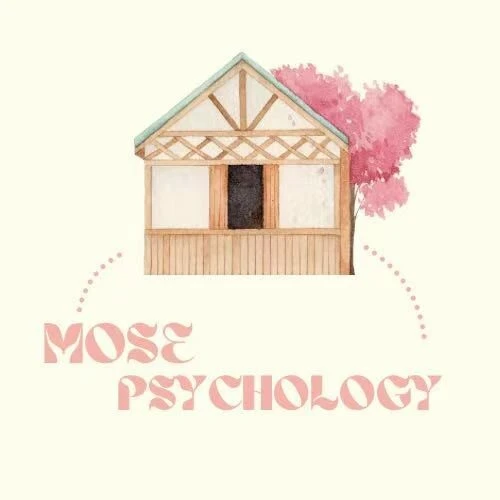
心理咨询与疗愈线上线下活动，公益华人心理咨询师网络搭建，陪伴求助者和助人者共同成长


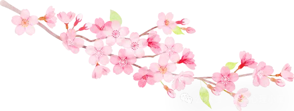
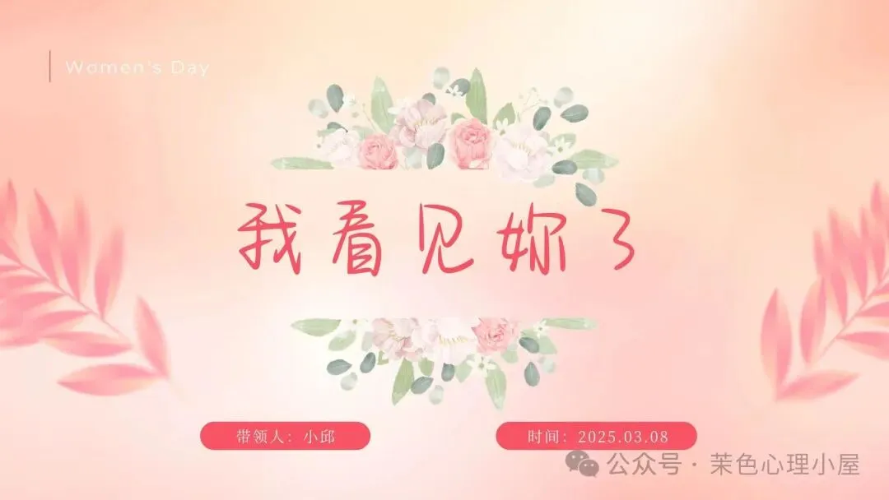
2025.03.08
在现代社会的喧嚣中，女性如同多面的宝石，在家庭、职场、社交等不同社会关系的舞台上切换闪耀。3月8日，茉色心理小屋携手AWDPI亚裔女性国际发展计划邀请相关社群的小伙伴，共同完成《我看见妳了》的女性主题情绪沙龙线上活动，大家一起探索自我、分享心得，共同创作了一组关于不同社会关系下自我认知与价值的情绪雕塑与画作。
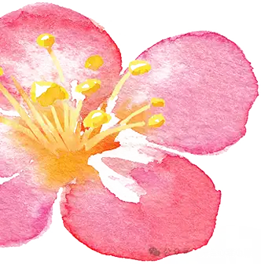
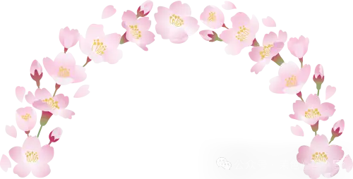
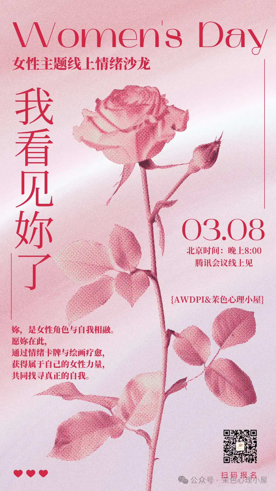
活动前期宣传海报
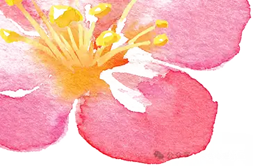
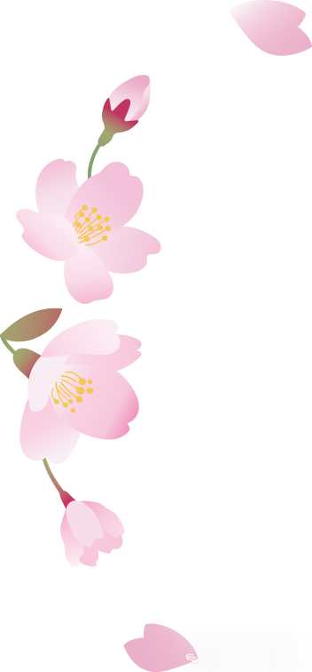
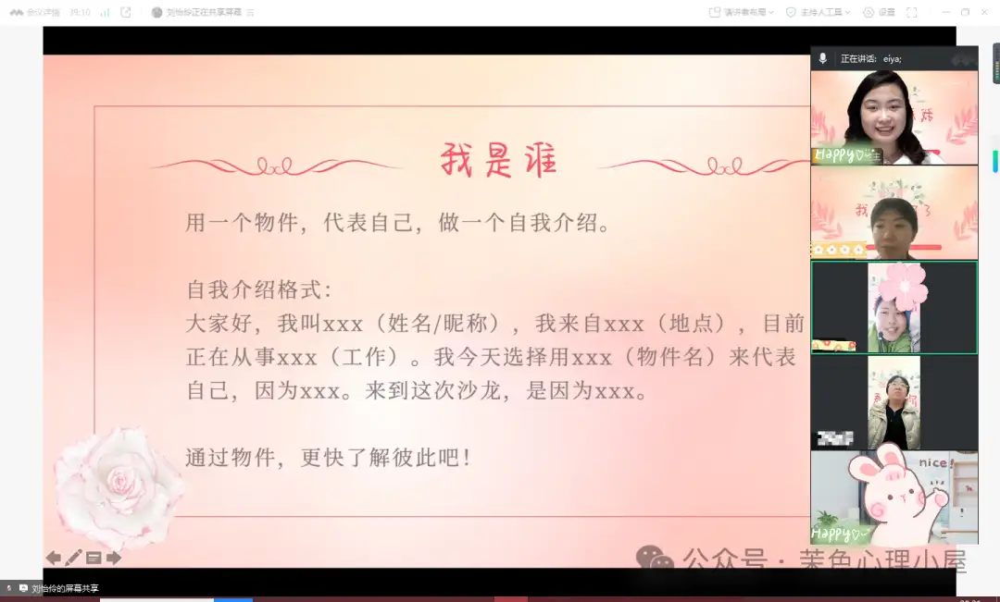
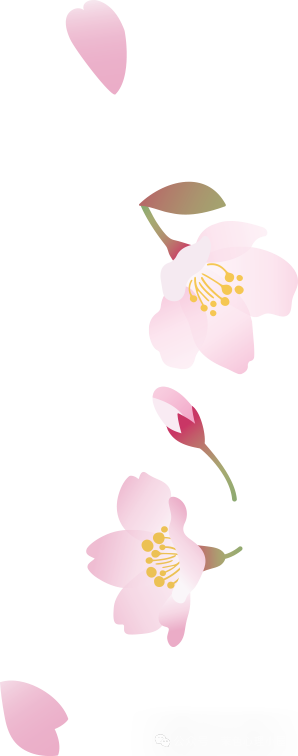
活动照片
活动伊始，大家在电脑前，每位参与者手持一件精心挑选的小物件，作为自我介绍的钥匙。有人拿着一个母亲送的发簪，回忆发簪背后的故事与情感；有人展示着自己的玩偶，表达自己与玩偶之间的链接。这些小物件承载着各自的故事，成为打开彼此心扉的钥匙。在这个环节，我们不仅听到了参与者们独特的经历，更感受到了那份想要在众多角色中探寻真我的渴望。
活动照片
当参与者逐一翻开自己抽到的情绪伙伴卡牌，一场别开生面的情绪雕塑创作拉开帷幕。参与者们用自己的肢体动作塑造出一个个不同社会关系的角色，有的是职场中坚毅的女强人，有的是家庭里温柔的倾听者。通过编辑故事与情节，我们看见女性在家庭中如胶水般维系亲情纽带，理解不同；在朋友面前，是那个永远的 cheerleader；在工作中，是 problem-solver；在社会环境下，又成为 boundary pusher。
中国女性与其他东亚女性在面对传统与现代交织时，展现出独特的力量与韧性。现代女性相较于历史上的女性，拥有更多选择与机会，却也在多元角色中寻求平衡。不同年龄的女性思维模式差异，在参与者的表达中，折射出时代变迁下女性成长轨迹的多样性。
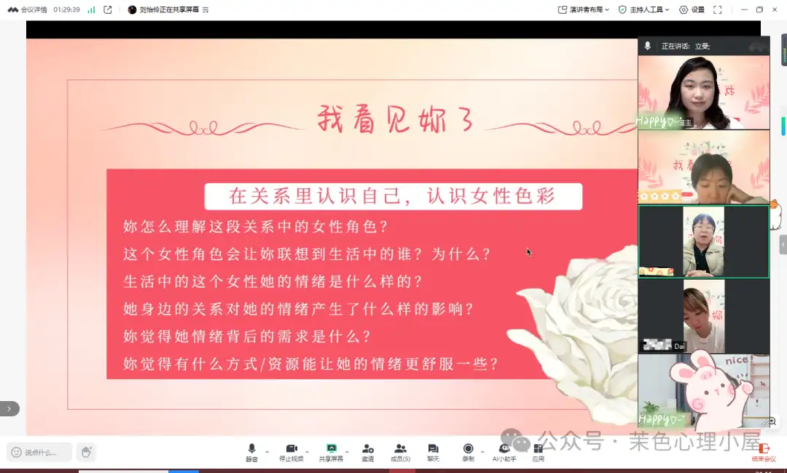
活动照片
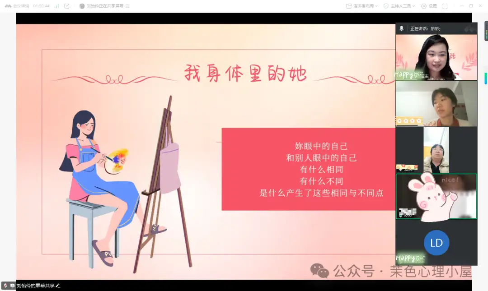
活动照片
绘画环节，是与内心深处的对话。右边，是别人眼中的自己，或许是在家庭中被期待的贤妻良母，在职场中被定义的成功典范；左边，则是自己眼中的真实模样，带着梦想、脆弱与不完美。画笔在纸上沙沙作响，勾勒出社会环境与真正自我的碰撞。大家在画布上描绘出内心中的那个“她”，用色彩与线条诉说那些未曾言说的情感，表达社会环境下与真正自我的不同，更加突显了“被看见”的重要性。
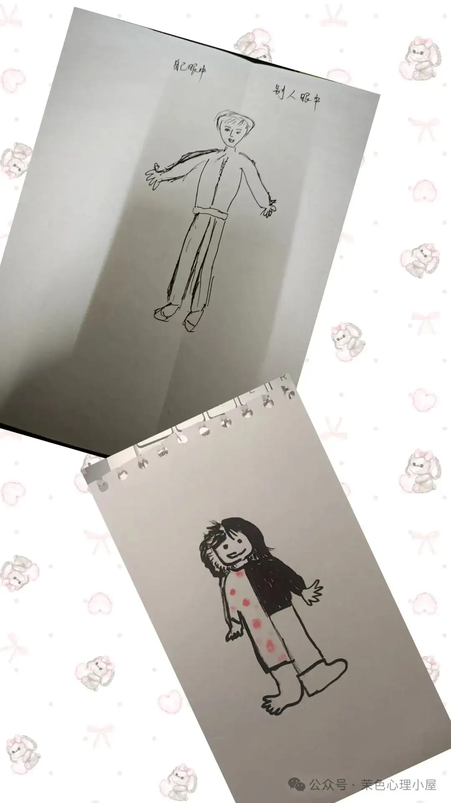
参与者绘画成果展示
感恩AWDPI项目与社群小伙伴的支持，同时感谢 每一位参与活动的小伙伴共同促成本次女性主题情绪沙龙活动。这是一场心灵的盛宴，关于女性力量的觉醒与绽放。通过自我介绍、情绪卡牌、绘画疗愈等环节，女性朋友们在游戏与表达中，穿越层层社会角色的迷雾，看见了彼此在不同社会关系中的色彩，听见了内心深处的呼唤。在这个安全而温暖的空间里，我们共同探讨、分享，为每一位女性的自我价值而欢呼。
未来，愿妳能继续前行，在自我成长的道路上绽放独特的光芒，让自己被世界温柔以待，因为每一个“妳”都值得被看见、被欣赏、被珍视。
扫描二维码
关注更多
心理咨询与赋能资源